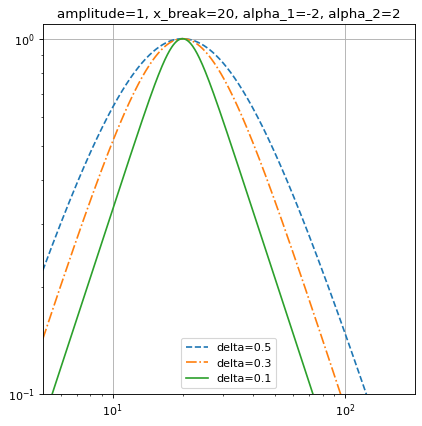

SmoothlyBrokenPowerLaw1D¶
-
class
astropy.modeling.powerlaws.SmoothlyBrokenPowerLaw1D(amplitude=1, x_break=1, alpha_1=- 2, alpha_2=2, delta=1, **kwargs)[source]¶ Bases:
astropy.modeling.Fittable1DModelOne dimensional smoothly broken power law model.
- Parameters
See also
Notes
Model formula (with \(A\) for
amplitude, \(x_b\) forx_break, \(\alpha_1\) foralpha_1, \(\alpha_2\) foralpha_2and \(\Delta\) fordelta):\[f(x) = A \left( \frac{x}{x_b} \right) ^ {-\alpha_1} \left\{ \frac{1}{2} \left[ 1 + \left( \frac{x}{x_b}\right)^{1 / \Delta} \right] \right\}^{(\alpha_1 - \alpha_2) \Delta}\]The change of slope occurs between the values \(x_1\) and \(x_2\) such that:
\[\log_{10} \frac{x_2}{x_b} = \log_{10} \frac{x_b}{x_1} \sim \Delta\]At values \(x \lesssim x_1\) and \(x \gtrsim x_2\) the model is approximately a simple power law with index \(\alpha_1\) and \(\alpha_2\) respectively. The two power laws are smoothly joined at values \(x_1 < x < x_2\), hence the \(\Delta\) parameter sets the “smoothness” of the slope change.
The
deltaparameter is bounded to values greater than 1e-3 (corresponding to \(x_2 / x_1 \gtrsim 1.002\)) to avoid overflow errors.The
amplitudeparameter is bounded to positive values since this model is typically used to represent positive quantities.Examples
import numpy as np import matplotlib.pyplot as plt from astropy.modeling import models x = np.logspace(0.7, 2.3, 500) f = models.SmoothlyBrokenPowerLaw1D(amplitude=1, x_break=20, alpha_1=-2, alpha_2=2) plt.figure() plt.title("amplitude=1, x_break=20, alpha_1=-2, alpha_2=2") f.delta = 0.5 plt.loglog(x, f(x), '--', label='delta=0.5') f.delta = 0.3 plt.loglog(x, f(x), '-.', label='delta=0.3') f.delta = 0.1 plt.loglog(x, f(x), label='delta=0.1') plt.axis([x.min(), x.max(), 0.1, 1.1]) plt.legend(loc='lower center') plt.grid(True) plt.show()
Attributes Summary
This property is used to indicate what units or sets of units the evaluate method expects, and returns a dictionary mapping inputs to units (or
Noneif any units are accepted).Names of the parameters that describe models of this type.
Methods Summary
evaluate(x, amplitude, x_break, alpha_1, …)One dimensional smoothly broken power law model function
fit_deriv(x, amplitude, x_break, alpha_1, …)One dimensional smoothly broken power law derivative with respect to parameters
Attributes Documentation
-
alpha_1= Parameter('alpha_1', value=-2.0)¶
-
alpha_2= Parameter('alpha_2', value=2.0)¶
-
amplitude= Parameter('amplitude', value=1.0, bounds=(0, None))¶
-
delta= Parameter('delta', value=1.0, bounds=(0.001, None))¶
-
input_units¶
-
param_names= ('amplitude', 'x_break', 'alpha_1', 'alpha_2', 'delta')¶ Names of the parameters that describe models of this type.
The parameters in this tuple are in the same order they should be passed in when initializing a model of a specific type. Some types of models, such as polynomial models, have a different number of parameters depending on some other property of the model, such as the degree.
When defining a custom model class the value of this attribute is automatically set by the
Parameterattributes defined in the class body.
-
x_break= Parameter('x_break', value=1.0)¶
Methods Documentation
{kind=link}
{kind=link}